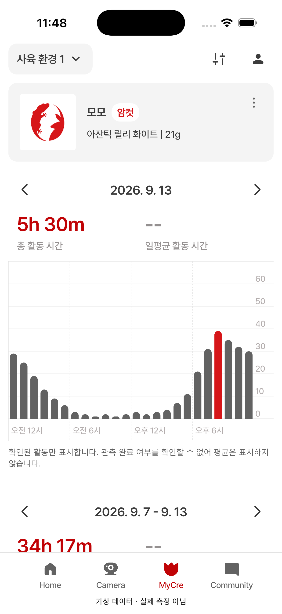

06 · MyCre 본문
06 사용자 확인 대기 · 01~05 기본 배치 승인 / 드롭다운 그림자 보류
개체 카드·성별 배지·일간 요약·그래프를 비교합니다. 앱은 신규 시뮬레이터 캡처이며 수치는 가상 데이터입니다.
확인할 차이: 평균 -- 상태의 안내문 때문에 주간 요약이 아래로 밀립니다. 안내문 배치는 아직 확정하지 않았습니다. 그래프 눈금 0~60분은 확정된 집계 기준이며 원본의 샘플 숫자를 따르지 않습니다. 하단 QA 안내도 일반 앱과 구분합니다.
Figma 원본 · 393pt 06 · 앱 · 402pt
06 · 앱 · 402pt
검수 범위와 다음 확인사항